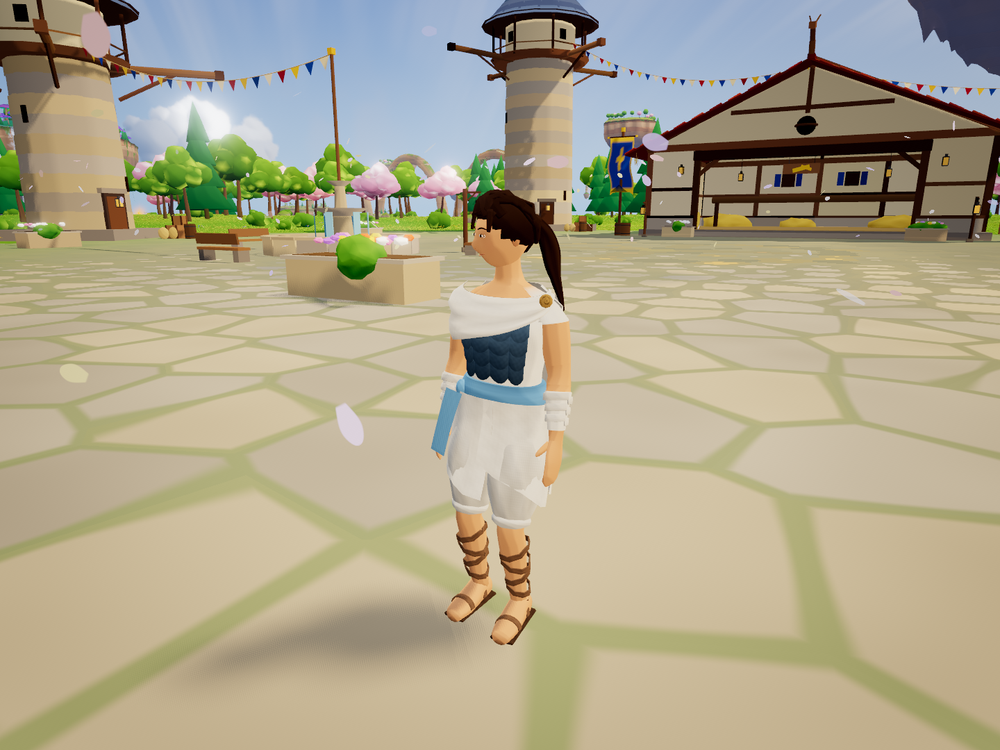

Low remains unchanged. Medium/High/Ultra gain sharper shadows, denser grass and smoother drawn cloth. Source scope and target-device sample are recorded separately from software regression checks.
P1 report · Graphics policy · Verification · Source hashes · Actual GPU sample · Launcher/menu checks · Cloth regression
Ultra viewer, actual Radeon rendering. The model viewer intentionally bypasses the menu; separate gameplay links open the normal title/Fly flow.

Higher quality preserves the approved costume/body and flight behavior. This is a local review increment, with no hosted update or production rollout.